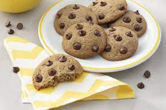

Menu
Cookies
Ingredientes
1/2 xic. (115g) de manteiga derretida/marrom
1/2 xíc (100g) de açúcar branco.
3/4 xíc. (1450g) de açúcar mascavo.
1 ovo
essência de baunilha a gosto.
1 e 1/4 xíc.(185g) de farinha de trigo
1 pitada de sal
pedacinhos de chocolate a gosto.
Preparo
Em uma tigela, misturar os ingredientes e mexa até parecer areia molhada;
Adicionar ovo e essencia misturando até ficar homogênio
Peneirar o restante juntos na tigela e mexer novamente ale ficar homogênio
Adicionar o chocolate e mexer, mas não muito
Reservar enquanto o forno aquece a 175°C
Untar ou forrar a forma e colocar bolinhas da mistura;
Assar no forno aquecido por 12-14 minutos

"